Contact tips
- Size: 0.8, 1.0, 1.2, 1.6
- Length: 40, 45
- Short tip
- Long tip
The product range
Cap tips, adaptors, shanks, electrodes, holders, pins, dressers, cables and MIG consumables, in the copper alloys, tungsten and molybdenum listed below. Special parts are made to order.
Cap tips
Replaceable cap tips in round, domed, tapered and offset profiles. Special cap tips are made to order.
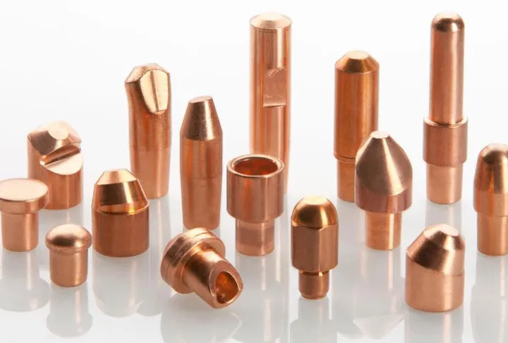
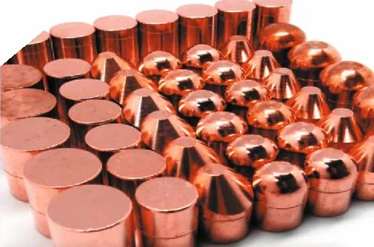
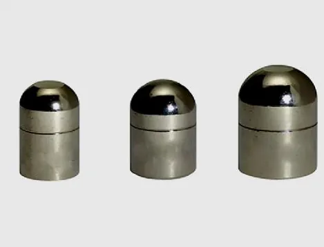
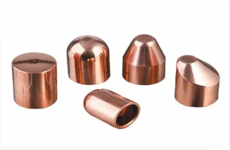
Adaptors
Hexagonal, round and cap tip type adaptors, with PT and NPT threaded versions.
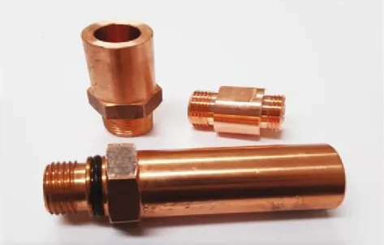
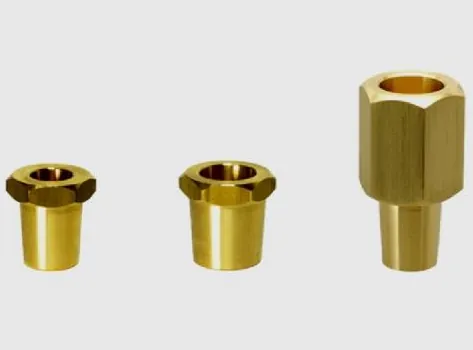
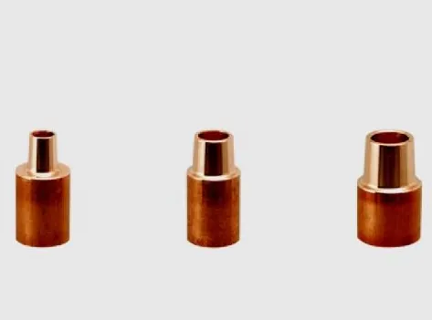
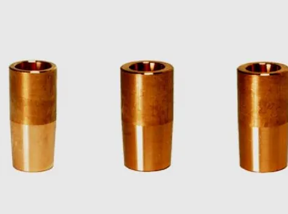
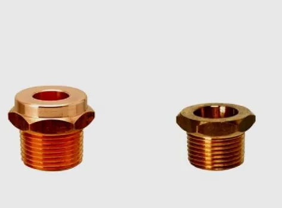
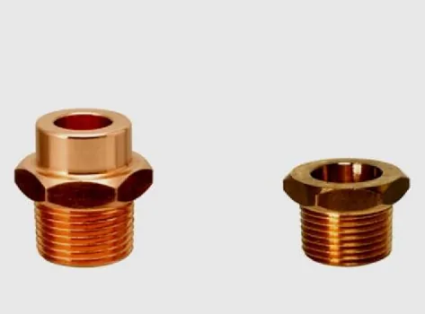
Shanks
Straight, shoulder, bend and offset shanks, so the electrode can get into deep and narrow workpieces.
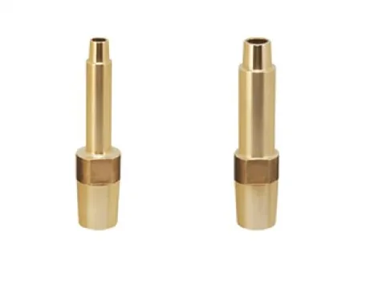
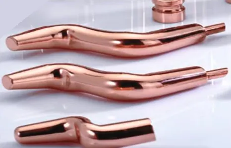
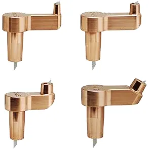
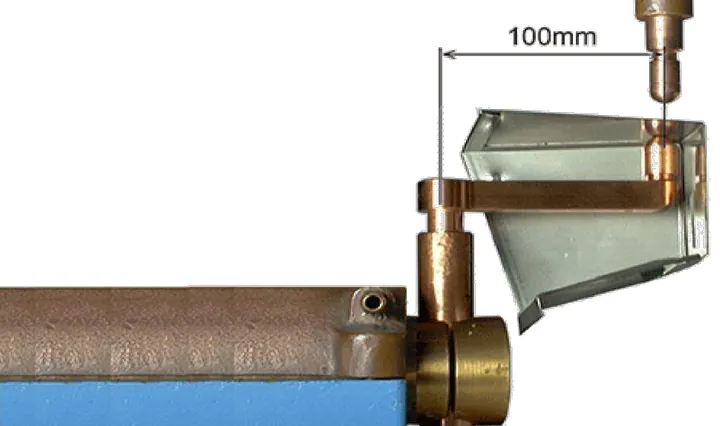
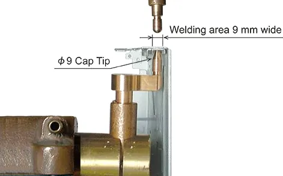
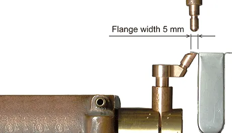
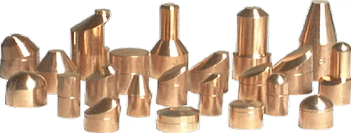
Tips
Tips for spot welding in straight, shoulder, offset and double-sided cut forms, including small tips for desktop welding machines.
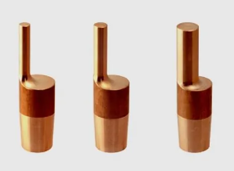
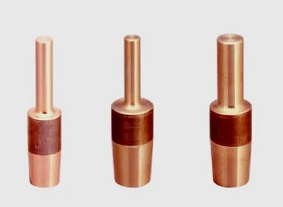
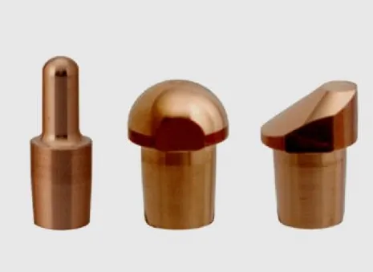
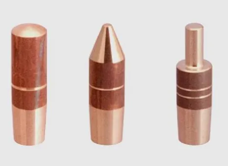
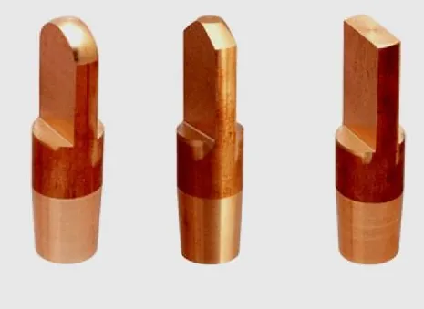
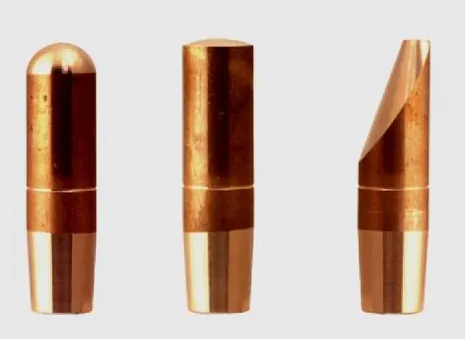
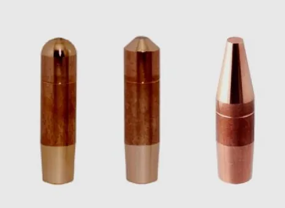
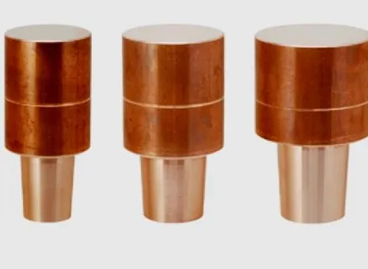
Electrodes
Upper and bottom electrodes for spot, nut and bolt welding, with barrels, horns and tungsten copper versions.
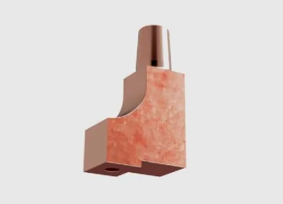
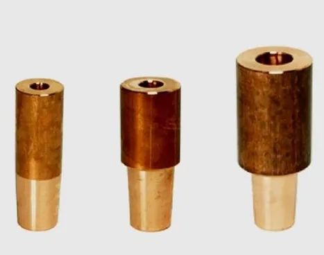
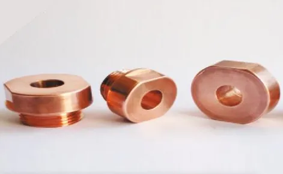
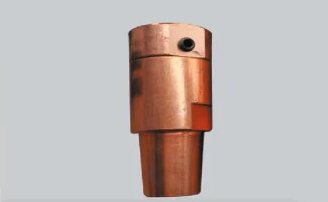
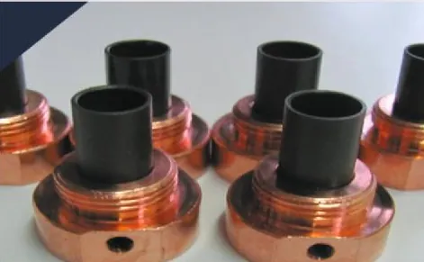
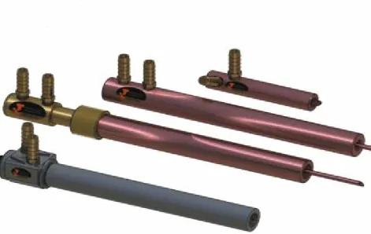
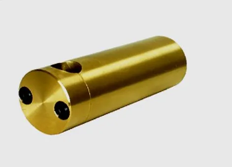
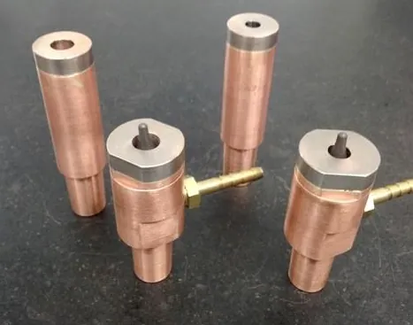
Pins
We are one of the leading suppliers of SS, ceramic coated, KCF and ceramic pins for projection welding applications.
We have maintained an excellent track record for customer satisfaction. We have never compromised on the quality and the services we provide. We believe in keeping customers happy and providing them with products at a very competitive price. We will guide you with the best ideas, keeping in constant touch with your company and informing you about market trends.
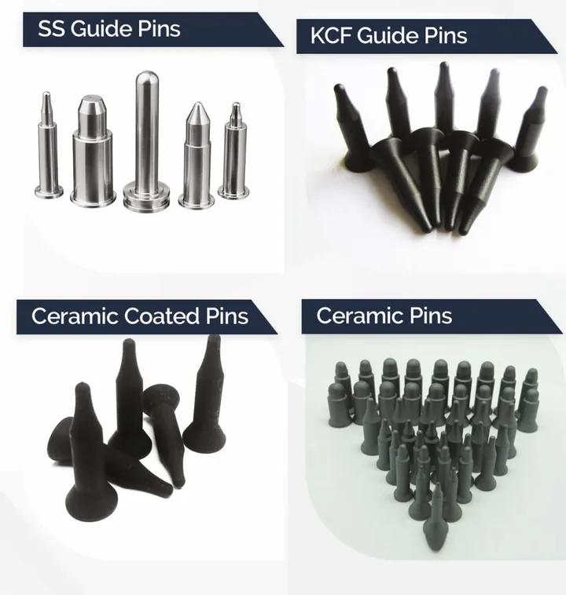
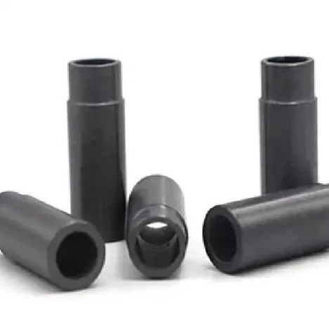
Collets
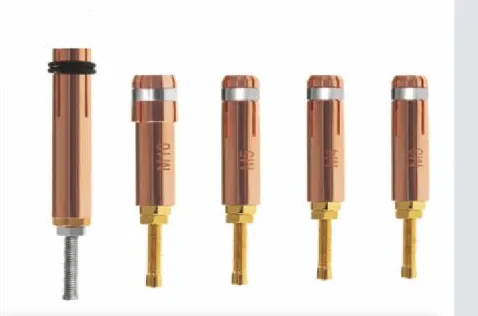
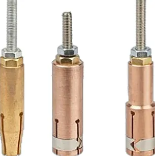
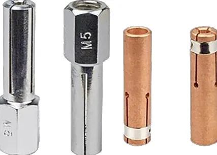
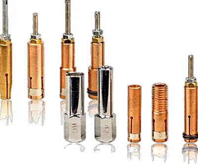
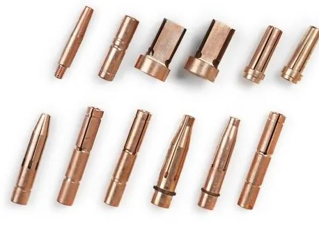
Holders and gun arms
Straight and bent holders and gun arms, with insulation for the holder.
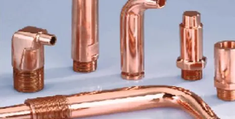
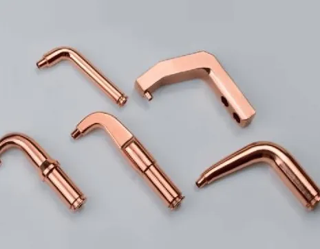
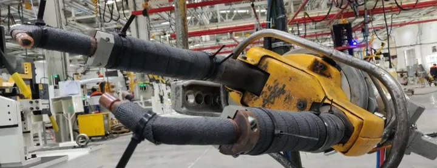
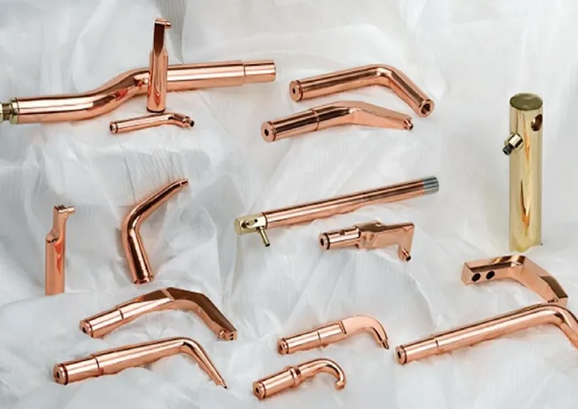
Tip dressers and tools
Pneumatic and ratchet tip dressers, cutter blades and holders, and tools to remove electrodes and cap tips.
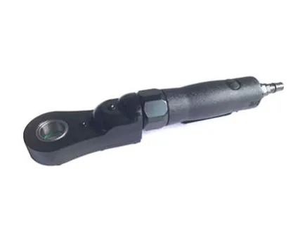
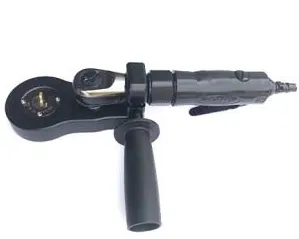
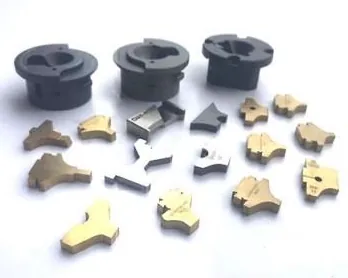
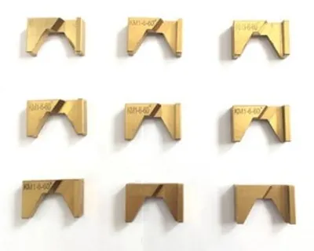
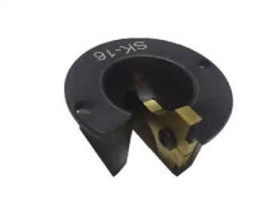
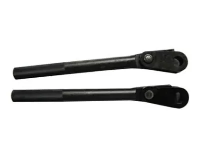
Seam wheels, shunts and cables
Current-carrying parts for the rest of the welding circuit.
| Item | 300 MCM | 400 MCM | 500 MCM | ||||||
|---|---|---|---|---|---|---|---|---|---|
| 2.0 m | 2.4 m | 3.0 m | 2.0 m | 2.4 m | 3.0 m | 2.0 m | 2.4 m | 3.0 m | |
| Reactance (µΩ) | 68 | 81 | 90 | 45 | 57 | 71 | 33 | 44 | 57 |
| Resistance (µΩ) | 460 | 550 | 680 | 330 | 400 | 495 | 265 | 320 | 400 |
| Impedance (µΩ) | 465±10 | 556±10 | 686±10 | 333±15 | 404±15 | 500±15 | 267±20 | 323±20 | 404±20 |
| Power factor | ≈ 0.99 | ||||||||
| Breakdown pressure | 8 kg/cm² | ||||||||
| Min. cooling water required | 6 litre/min | ||||||||
| Outer diameter | 52 mm | 56 mm | 63 mm | ||||||
More parts
Tungsten copper electrodes, swivel electrodes, nut welding springs and sheet separators, plus parts machined to your drawing.
MIG consumables
Conduction of electricity with attaching tip. Supply of gas to nozzle.
Straight and taper nose insulating guard of tip and tip body.
Electric insulation of nozzle.
Materials
Our infrastructure
Send a drawing or a photo of the part you use today and we will come back with the grade and the price.
PSL Alloys Chennai office: No. 250, Kanchipuram-Chengalpattu Main Road, Pazhayaseevaram, Kanchipuram – 631606. Manufacturing unit: CMP 2, SIDCO Industrial Estate, Gandhi Nagar, Vellore – 632 006. +91 88078 55534 +91 99407 45534 pslalloys@gmail.com